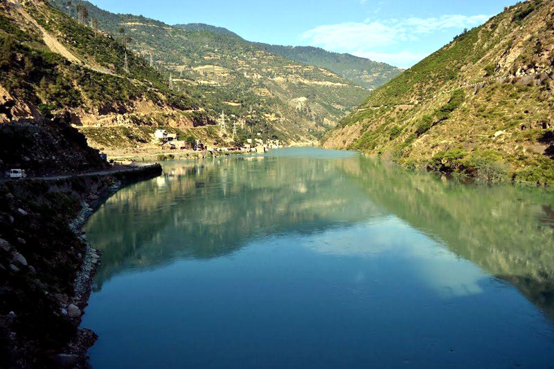
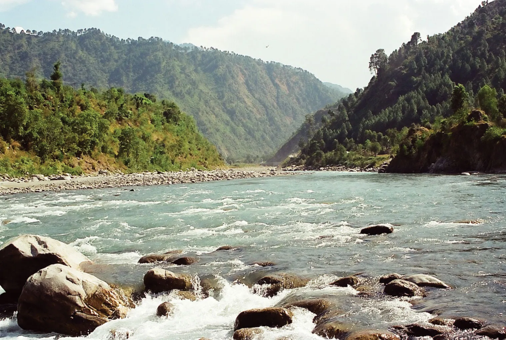
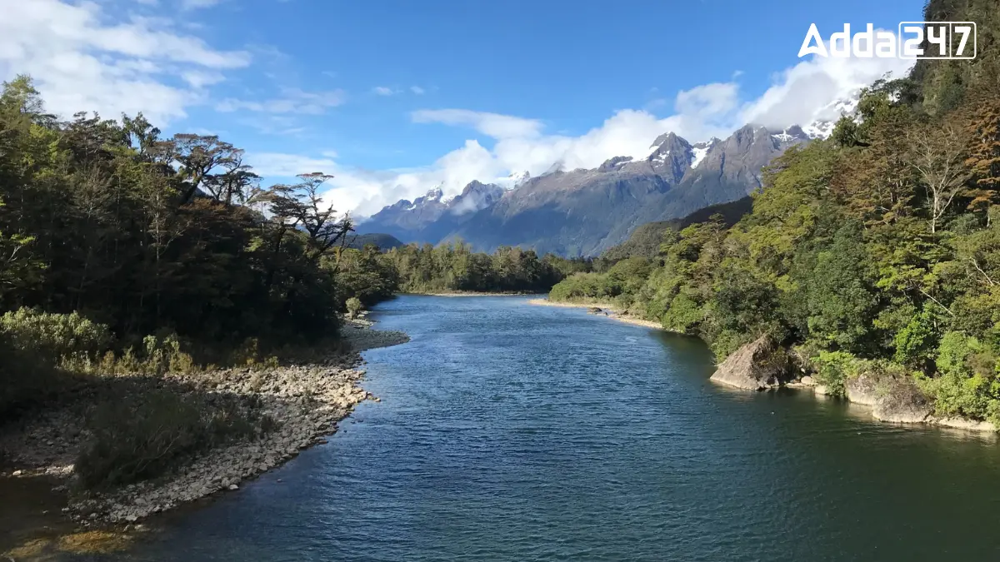

Rivers
1.Beas River:

Origin:
Beas Kund in the Pir Panjal Range.
Course:
Flows through Kullu Valley, then moves into Punjab.
Significance:
Major tributary of the Chenab River and important for irrigation and hydroelectric power.
2.Chenab River:

Origin:
The confluence of the Chandra and Bhaga rivers in the Lahaul region.
Course:
Flows through the Chamba district and into Punjab.
Significance:
Part of the Indus River system and crucial for agriculture in the Punjab region.
3.Jhelum River:

Origin:
The spring-fed sources in the Pir Panjal Range.
Course:
Flows into Jammu and Kashmir, eventually reaching the Indus River.
Significance:
A vital river for the Kashmir Valley and part of the Indus River system.
4.Ravi River:

Origin:
The Chamba district in Himachal Pradesh.
Course:
Flows into the Punjab region and then into Pakistan.
Significance:
Part of the Indus River system, important for agriculture and water resources.
5.Satluj River:

Origin:
The Tibetan Plateau.
Course:
Flows through the Kinnaur and Shimla districts, then into Punjab.
Significance:
Key river for hydroelectric projects and irrigation, also part of the Indus River system.
6.Yamuna River:

Origin:
Yamunotri Glacier in the Uttarkashi district (near the border with Himachal Pradesh).
Course:
Flows through Himachal Pradesh and into Uttar Pradesh before merging with the Ganges.
Significance:
Major river for northern India, crucial for water supply and agriculture.